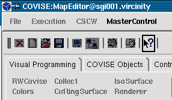
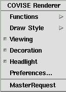

You have 2 possibilities to become Master
|
|  |  |
| MasterRequest via MasterControl from (Slave) MapEditor | MasterRequest from PopUp Menu in (Slave)Renderer |
Note 2:
| You can use this (and no other) menu item as Slave only! |
A master/slave relationship is applied
among participating partners of a session.
This means, that at every point in time
only one participant has control over the overall session, while the others
can only watch ongoing actions performed by the master. All slave windows
are insensitive for user input. But all important events are spread to
all slaves. Therefore when a new map is generated or editied, every module
icon and connection line between module ports also appear in the slave
MapEditor working area. The modifications in the Module Setup and attached
parameters in the Control Panel are also spread to the slave sides.
Changing the roles of Master and Slave works as follows:
|
Please observe the following restrictions for scalar/slider parameters if their appearance type has been changed to player/sequencer:
|
For functions available as Master see option CSCW.
To send infomation to partners (independent from master or slave state) use the Chat Line (and receive information in the Message Area).
For general information on distributed
and collaborative working see CollaborativeWorking,
Tutorial
(Advanced Topics),
and User's
Guide, chapter COVISE CE.